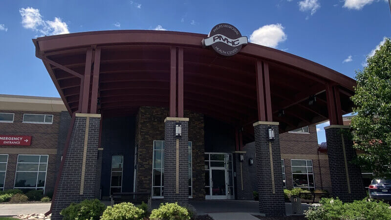
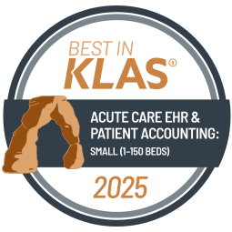

MEDITECH Revenue Cycle
A strong revenue cycle begins and ends with a satisfied patient
The best healthcare is patient-centered — and your organization’s revenue cycle should be too. Your community wants consumer-friendly, accurate billing statements as well as simple online tools to settle co-payments and balances. With MEDITECH’s integrated Revenue Cycle for Acute, Ambulatory, and Long-Term Care, they will get it — while you build a solid foundation for long-term financial health.

Empowering cost-effective care
With providers expected to reduce inefficiencies and costs while increasing patient satisfaction, you need strong revenue cycle management that is agile and resilient. MEDITECH’s Revenue Cycle solution supports revenue generation for healthcare organizations by providing innovative, efficient tools that contribute to a positive experience and connect every point of patient care.
Maximize the effectiveness of staff by providing intuitive tools and simplified, automated workflows. Bolster your denial prevention strategy with prior authorization that streamlines processes for providers and reduces administrative burdens.
Increase the transparency, flexibility, and convenience of the patient experience by treating patients as consumers. Provide a single and timely billing statement combining ambulatory and acute charges and leverage capabilities such as real-time patient cost estimation, which demystifies healthcare billing and reduces the cost to collect.
Be confident in partnering with a vendor that is constantly innovating to support the needs of shifting regulations and evolving industry trends. Our solutions help increase efficiency and give you the insight needed to manage the overall financial health of your organization.
Support your frontline and strengthen your bottom line with strategic revenue cycle management
Build a foundation for long-term financial sustainability and operational efficiency with innovative technologies for monitoring and optimizing your organization's revenue cycle, improving clinician workflows, and enhancing the patient experience.
- Three pillars of revenue cycle success
- Why a strong revenue cycle begins and ends with a satisfied patient
- Ways to maximize your reimbursement
- Customer successes
What you’ll find in this eBook:

Consolidate your revenue cycle under one roof
A centralized business office is at the heart of healthy profit margins. MEDITECH's Expanse Revenue Cycle was built with front-to-back integration in mind, giving you a more holistic patient story with every claim. Whether patients are visiting their primary care provider, seeing a specialist, undergoing a procedure at the hospital, or presenting at the ED, MEDITECH ensures that the demographic, insurance, and clinical data needed for timely billing and collections is efficiently captured prior to and/or at the time of service.
Patient Access/Front Office
- Scheduling
- Preregistration
- Contactless check-in
- Registration
- Insurance verification
- Referrals/Authorizations
- Cost estimation
- Co-pay collection
Middle Office
- Clinical documentation
- Transcription coding
- Case coordination
- Medical records
- Charge capture
Back Office
- Claim checking and submission
- Payment processing and posting
- Denial management
- A/R follow-up and appeals
- Contract management
- Patient billing
End-to-end integration beginning at the first points of patient contact — spanning acute, ambulatory, and long-term-care settings — can minimize lost charges, reduce claim rejections, and improve employee productivity.
The lower, the better
Intuitive workflows with system-wide integration can substantially reduce A/R days to boost your organization's overall fiscal health.

Phelps Memorial Health Center
Phelps Memorial Health Center has optimized their Revenue Cycle to reduce their denial days from 9.4 to 0.2, decrease A/R days from 55 to 30, and increase their clean claim rate from 0% to 90%.
- - - - -
“We've benefited greatly from our integrated EHR system, which has reduced administrative burden on staff.”
— Rachel Dallmann, Senior Vice President of Clinical Operations, Phelps Memorial Health Center
Howard County Medical Center
Howard County Medical Center uses Expanse Revenue Cycle to achieve greater financial transparency and efficiency, reducing self-pay debt by 42% through community engagement.
- - - - -
“It’s not just about Howard County, it’s about the patients.”
— Morgan Meyer, CFO, Howard County Medical Center
Oswego Health
Using MEDITECH's Revenue Cycle solution to automate processes, Oswego Health has kept their A/R days low, currently averaging between 30-35 days.
- - - - -
“It starts at the top, from the CEO down. Through strong leadership and actionable, transparent data, we’ve been able to achieve our financial goals.”
— Eric Campbell, CFO, Oswego Health
MEDITECH Expanse earns top marks in 2025 KLAS Report
MEDITECH ranked #1 in the 2025 Best in KLAS: Software & Services report for Acute Care EHR and Patient Accounting: Small (1–150 Beds), and rated #2 for Midsize (151–400 Beds). KLAS continues to recognize MEDITECH as a market-share leader in this space, and MEDITECH's integrated Revenue Cycle as a top-rated solution.

“MEDITECH does a great job. We would like to think that we had high expectations to begin with because we went through a careful selection process before going with MEDITECH. With EHRs in general, MEDITECH's system is as competitive and easy to use as an Epic or Cerner EHR. We get feedback as we are training providers who have worked on those other platforms, and there are not any needs that the system doesn't meet. MEDITECH's system is comprehensive.”
— VP, February 2024
“With Expanse Patient Accounting, because there seems to be a better platform to integrate from, there seems to be more that is correctly built out on that side. It just functions and delivers not just the transactional data that we need but also the data for analytics. Since Expanse Patient Accounting’s implementation, we have had a lot more visibility into data and insights around our whole life cycle. On the revenue cycle side, there is definitely better visibility and better control of that from a cash flow and denials perspective. But then there is also the improved connectivity with our third parties, like our clearinghouses and those different vendors that are all involved in that process.”
— CIO, April 2024
Efficient referral management
By effectively managing the referral process, healthcare organizations can improve patient satisfaction, streamline operations, and optimize revenue generation. MEDITECH’s Referral Management Dashboard (RMD) helps clinicians provide timely and appropriate care for patients by delivering insights into insurance eligibility verification, identifying in-network specialists, and improving care coordination.
Denial prevention, beginning with first contact
Get fully reimbursed for the care you provide. Fight costly denials with embedded, front-end denial prevention workflows, a comprehensive appeals process, and the data to monitor trends.

Collect complete and accurate patient and insurance data before services are rendered.
Avoid claim denials. Verify insurance, receive authorization alerts, and perform medical necessity checks upon initial patient contact.
Pre-screen claims and provide billers with a prioritized, exceptions-based worklist of potential denials.
Manage and track the appeals process of denials with actionable worklists.
Monitor and analyze denial trends, as well as the success rate of your appeals, with interactive denial management reports.
Learn how a revenue cycle roadmap leads to positive outcomes at Phelps Memorial Health Center.